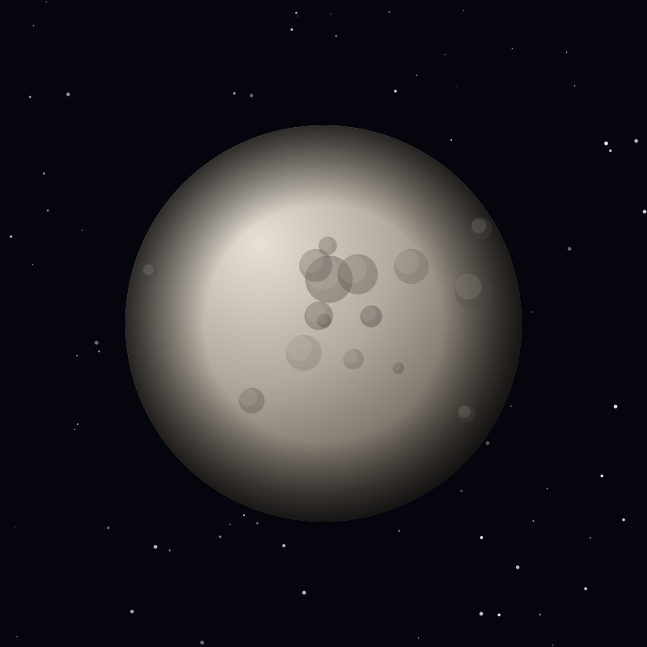

Moon
Ganymede
The largest moon in the solar system — bigger than the planet Mercury — and the only moon with its own magnetic field.
Object 10 of 26

Key facts
- Distance from Earth
- 781 million km (avg)
- Radius
- 2,634 km (largest moon)
- Surface gravity
- 1.43 m/s²
- Orbital period
- 7.15 days
- Surface temperature
- -163°C
- Magnetic field
- Yes — the only moon with one
- Internal ocean
- Suspected, ~100 km deep
- Discovered
- 1610, Galileo Galilei
Overview
Ganymede is the largest moon in the solar system and the only one bigger than the planet Mercury. If it orbited the Sun instead of Jupiter, it would rank as a respectable planet in its own right.
It is also the only moon known to generate its own magnetic field, which makes its environment unusually complex — a moon with a magnetosphere nested inside Jupiter's much larger one.
Ice & Rock
Ganymede is differentiated into an iron-rich core, a rocky mantle and an outer shell of ice and rock. Its surface records two terrain types: dark, ancient and heavily cratered, cut by lighter bands of grooved ice formed when the crust pulled apart and fresh material welled up.
Magnetic induction measurements point to a salty liquid water ocean lying about 150 kilometres down, possibly sandwiched between two layers of ice. It may be the largest body of liquid water in the solar system.
A Magnetic Field
Ganymede's magnetic field is generated by convection in its liquid iron core — the same process that produces Earth's field. Where it meets Jupiter's, it creates a small magnetosphere with aurorae that Hubble has observed as shifting bands of light.
Those auroral oscillations were used to infer the depth of the buried ocean: the magnetic field rocks the whole ice shell, and the timing of the wiggle reveals how thick and conductive the layer beneath must be.
Exploration
Galileo, Voyager and New Horizons have all imaged Ganymede, but the detailed study is still ahead. ESA's JUICE spacecraft, launched in April 2023, is travelling through the Jupiter system now.
JUICE will make Ganymede the first moon ever orbited by a spacecraft, arriving in 2034 to survey the interior, the magnetic field and the surface over an extended mission.